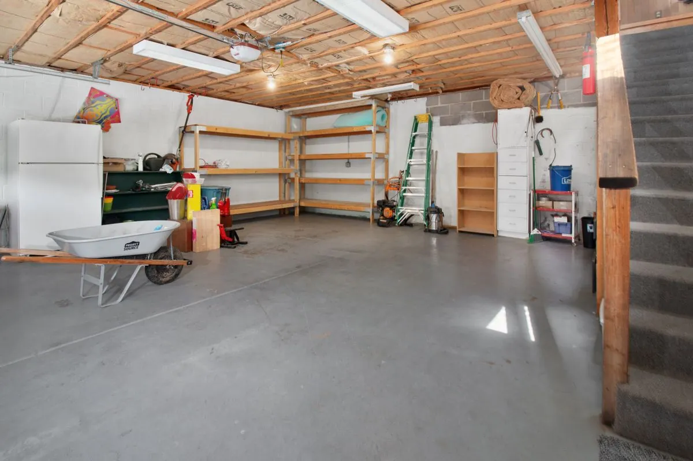

Garage floor epoxy is the most requested job we run in Spokane Valley, and for good reason: it is the one surface in your home that takes the full brunt of winter driving, from salt and slush to hot tire pickup in July. A properly installed system turns a stained, chalky slab into a sealed, easy-to-clean floor that holds up to daily vehicle traffic.

We start with diamond grinding to remove old sealers, oil contamination, and the surface layer of concrete cream, opening up a profile the coating can mechanically bond to. Acid etching does not do this job well enough for a garage floor, which is why we do not use it.
After grinding, we fill cracks and control joints, vacuum the dust, and apply a moisture-tolerant primer, a base color coat with optional flake broadcast, and a clear topcoat. Most two-car garages take one to two days from start to finish.
Common triggers are visible salt staining, hot tire marks, hairline cracks that widen each winter, or simply wanting a garage that looks and cleans up like a showroom instead of a job site. New homeowners in Spokane Valley also coat garages soon after moving in, before the slab picks up years of oil and tire marks.
Bare concrete is porous. It absorbs the salt and de-icing chemicals tracked in off winter roads, and that moisture expands and contracts through the freeze-thaw cycles that run from November through March here. Over several winters, that cycle causes surface spalling — the flaking, pitted texture you see on older uncoated garage floors. Hot tire pickup in summer adds to the wear by softening any old sealer and pulling it loose.
Expect $4 to $10 per square foot installed, or roughly $1,800 to $5,500 for a typical two-car garage. The biggest cost driver is floor prep: a slab with heavy staining, old peeling paint, or multiple cracks takes longer to grind and repair than a clean, bare slab. Coating system choice matters too — water-based epoxy runs cheaper but lasts 3 to 5 years, while solid epoxy or polyaspartic systems cost more up front and can last 10 to 20 years.
Solid epoxy gives excellent chemical and abrasion resistance and is the standard choice for most Spokane Valley garages. Polyaspartic topcoats cure much faster, even in cooler shop temperatures, which makes them the better pick if you are scheduling work in late fall or early spring when garage temperatures sit in the 40s and 50s. Many of our jobs actually combine both: a solid epoxy base coat with a polyaspartic topcoat for faster turnaround and added UV stability.
Light foot traffic is fine after about 24 hours, but we recommend keeping vehicles off the floor for a full week so the coating reaches full cure hardness before it takes tire weight and turning friction.
We grind out and fill cracks before coating rather than painting over them, since a crack left unfilled will telegraph through the epoxy and keep moving with the slab underneath during Spokane Valley's freeze-thaw winters.
No. That is one of the main reasons to coat a garage floor here — the epoxy seals the concrete so salt and de-icer runoff sits on top of the coating instead of soaking into the slab and causing spalling.
Yes, once fully cured, a properly installed epoxy system handles daily vehicle traffic including trucks and SUVs without issue. We recommend solid epoxy or a polyaspartic topcoat for garages that see heavier vehicles.